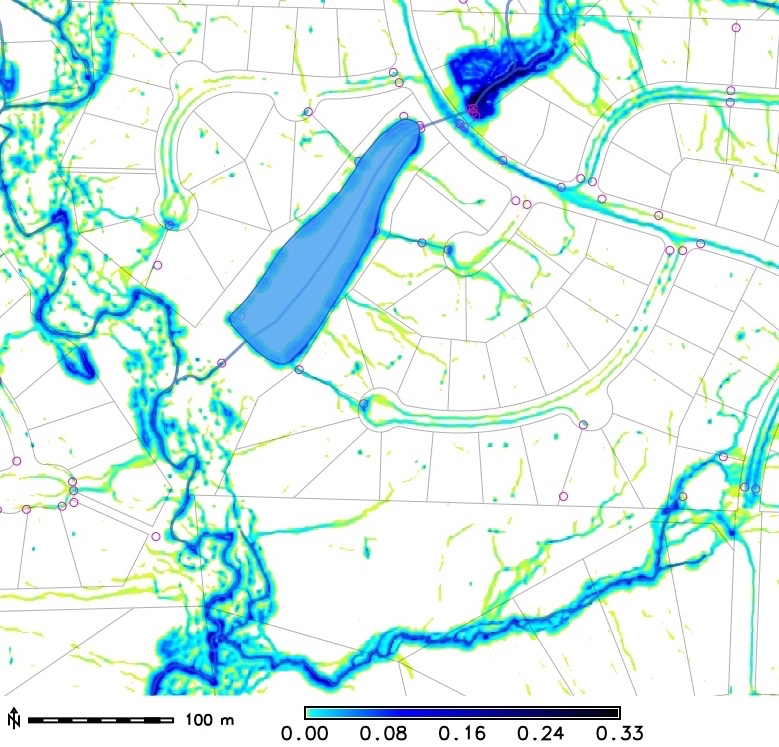

Dynamic Surfaces and Geospatial Processes
Helena Mitasova and Geoforall Lab team:
A.Petrasova, V. Petras, B.Harmon, P.Tabrizian, J. Jeziorska

From observations to tangible interaction
- multitemporal elevation observations
- modeling surface processes
- beyond bare ground
- Tangible Landscape
Modeling and analysis of surfaces from multitemporal observations
Application to Jockey's Ridge State Park
Jockey's Ridge sand dunes
- Largest active dunes on the East coast, state park with static boundaries
- Management challenges: wind blowrsn sand outside the park, covering structures and roads, dune lost elevation
- Quantification of changes and migration rates was needed


Mitas, O. et al. 2014, Managing Dune Landscape Changes at Jockey's Ridge State Park, North Carolina, Tourism in Marine Environments 9(3-4), pp. 155-167.
From digitized contours to lidar point clouds
Lidar technology transformed topography mapping in 21st century
Coastal multitemporal elevation data
- photogrammetry: 1974, 1995, 1998
- lidar: 1999,2001,2007,2008,2009,2012,2014,2015 (7/2018,10/2018)
- structure from motion from UAS imagery: 2016,2017

1974 1998 1999


2001 2009 2015
Petras et al., 2023, Point density variations in airborne lidar point clouds, Sensors 23(3), 1593.
Point cloud to DEM: binning
Jockey's Ridge dunes 1999 point cloud, binned at 1m resolution
Point cloud to DEM: binning
Jockey's Ridge dunes 1999 point cloud, binned at 3m resolution
Point cloud to DEM: interpolation
1999 point cloud interpolated at 1m resolution using reg. spline with tension
Spline interpolation with analysis
By tuning the tension coupled with smoothing, noise is reduced and, simultaneously, topographic parameters are derived at a desired level of detail:profile curvature and slope draped over surface with changing tension

Mitasova, H. et al. 2005, Simultaneous spline interpolation and topographic analysis for lidar elevation data: methods for Open source GIS, IEEE GRSL 2(4), pp. 375- 379.
Multitemporal DEM
Managed using GRASS temporal framework TGRASS


Gebbert, S., Pebesma, E., 2014. A temporal GIS for field based
environmental modeling. Environmental Modelling and Software 53, 1-12.
Multitemporal DEM visualization
Jockey's Ridge 1974 - 2017: southward migration, landform transformation
from crescentic dune to sand starved, fast moving parabolic dune

Multitemporal DEM visualization
Complex pattern of changes
- DEM differences show both elevation loss (red) and increase (blue)
- total sand volume has been stable (~3.5 mil cubic m)
- volume of core (sand not moved between 1974-2017) is only 30% of total volume
Multitemporal Contours
Contours capture the landform change but they are hard to read16m
 20m
20m
Space-Time cube visualization
DEM time series is converted into space-time voxel model in TGRASS and evolution of a contour is represented as isosurface: 16m and 20m


Jockey's Ridge evolution analysis
DEM time series: evolution quantified using TGRASS and surface analysis tools
- linear trend in loss of peak elevation at 0.3m per year
- accelerating horizontal migration from 3m/yr to 6m/yr
- total sand volume is stable, but the core (sand that has not moved) is shrinking
- vegetation increased, but dune still kills trees on the leeward side
- management challenges: dynamic feature confined to static park boundaries

Jockey's Ridge story
The 43 m high dune was a transient landform


Dune in 1900 and 2016, vegetation lost between 1998-2007
Jockey's Ridge management
Management focus is on preserving processes rather than features:living landscape
Up to date, 3D mapping is essential for sand relocation planning (done in 2003, 2019), sand volume estimates, assessment of effectivenes, and for vegetation management.
Multitemporal DEMs
Learn more about multitemporal DEM analytics:- Hardin et al. 2014, GIS-based Analysis of Coastal Lidar Time-Series, Springer Brief
- Starek MJ, et al., 2011, Modeling and analysis of landscape evolution using airborne, terrestrial, and laboratory laser scanning, Geosphere, 7(6), p. 1340-1356
- Starek, M.J., et al. 2013, Space-Time Cube Representation of Stream Bank Evolution Mapped by Terrestrial Laser Scanning, IEEE Geoscience and Remote Sensing Letters 10(6), p. 1369-1373

From observations to modeling of processes
Water and sediment flow
Land surface controls water and sediment flow across landscapes
Critical processes and impacts: surface runoff, flooding, soil erosion


Surface flow modeling methods
Methods for modeling water flow depth
- input: DEM with depression
- least cost path
- D-inf with depression as sink
- water accumulates is depression: kinematic wave
- water fills depression and flows out: diffusive wave
- predefined channel through depression
Dynamic Hydrologic Models
Flow modeling with diffusion term: process-based simulation
Instead of filling the DEM, we fill the depression with water
Path sampling method
- duality between particle and field representation
- path sampling: water evolving according to the shallow water bivariate continuity equation - drift and diffusion with stochastic component


Overland water flow
Path sampling based simulation of water flow within a small agricultural watershed
Photo: Flooding during Hurricane Alberto in 2006; Model: simulation of ponding and dispersed flow over the road
High resolution water flow
Street level modeling of surface runoff: sub-meter resolution, lidar-based DEM and path sampling method reproduce flow over streets and ponding in riparian area protected by stream buffers

High resolution water flow
Modeling spatial pattern of standing water after storm has passed


Modeling surface runoff and erosion/deposition
Impact of variable land cover and construction on runoff and erosion and deposition, limitations of stream buffer protection
Water flow and erosion modeling
Learn more about surface water flow and erosion, sediment transport and deposition modeling:- Harmon B. et al., 2019. r.sim.terrain 1.0: a landscape evolution model with dynamic hydrology. In: Geoscientific Model Development, 12(7).
- Mitasova et al., 2013, GIS-based soil erosion modeling, In: Treatise on Geomorphology. Academic Press, San Diego, CA, vol. 3, Remote Sensing and GIScience in Geomorphology, pp. 228–258
- Mitasova, H., et al., 2005, Path sampling method for modeling overland water flow, sediment transport and short term terrain evolution in Open Source GIS. In: C.T. Miller, et al. eds., Proc. CMWR XV, 13-17 June 2004, Chapel Hill, NC, USA, Elsevier, pp. 1479-1490.
Beyond bare ground
Modeling and analyzing surfaces with vegetation and structures
Beyond bare earth surface: vegetation
Geomorphons (Jasiewicz, Stepinski 2013) for vegetation surfaces from lidar, UASindividual tree detection and trunk modeling (Tabrizian et al. 2018)
Viewshed from DSM
Deriving viewshed from DSM with enhanced tree representation usingindividual tree detection and trunk modeling (Tabrizian et al. 2018)

Urban topography and solar irradiation
Modeling the dynamics of solar irradiation and cast shadows in urban environment: summer solstice day at NCSU Centennial Campus

Vegetation voxel model
Generalized Fragmentation Index: slice of raw point cloud and slice of fragmentation index 3D raster


Vegetation voxel model
Slicing through fragmentation index 3D raster
Tangible interface for surface analysis and process modeling
Tangible Landscape
Bringing people together around GIS: Tangible user interface for GRASS GIS
Designed to make working with geospatial data and simulations engaging, and fun

Petrasova, A. et al. (2018). Tangible Modeling with Open Source GIS. Second edition. Springer International Publishing. https://doi.org/10.1007/978-3-319-89303-7
How does it work?

Tangible Landscape couples a digital and a physical model through a continuous cycle of 3D scanning, geospatial modeling, and projection
Interactions

Coupling with 3D rendering

Design scenario analysis

Tangible Landscape for designers and researchers


Tangible Landscape for education

Tangible Landscape for communities
Platform for decision-making and science communication where people of different backgrounds can interact.

Learn more about Tangible Landscape
Tangible Landscape website:
tangible-landscape.github.io
TL wiki: github.com/tangible-landscape/grass-tangible-landscape/wiki
Open Science
Developing open source software and contributing to OSGeo projects:
GRASS GIS https://grass.osgeo.org/
Tangible Landscape tangible-landscape.github.io
Open access educational material:
NCSU GeoForAll Lab Courses and Workshops
https://geospatial.ncsu.edu/geoforall/courses.html
Geovisualization lab virtual tour: https://go.ncsu.edu/geoviz-scan

Thank You!